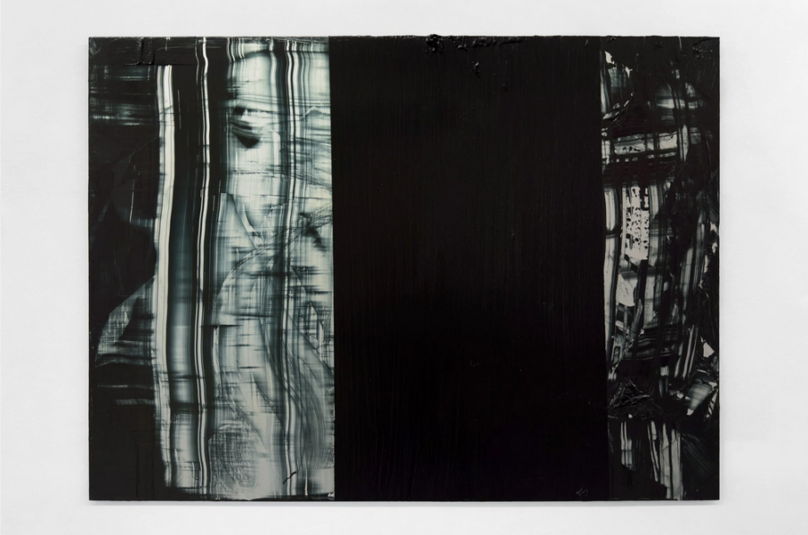

Matthew Herriot: Surface Veil
Join Matthew Herriot and Héloïse Paillard in conversation around Surface Veil, a series of acrylic paintings on aluminium responding to image-based perceptual habits in painting.
Artist talk at boundary, Saturday 18th at 2PM
2334 West 111th Place, Chicago 60643
Matthew Herriot (b. 1999, London, UK) has a BA from Yale University (2022) and an MFA from the School of the Art Institute of Chicago (2025). Herriot’s work is in private collections located in Los Angeles, CA; San Francisco, CA; Chicago, IL; New York, NY; New Haven, CT; Boston, MA; London, UK; and La Môle, France. His recent exhibitions include Echoes of Form, Mayfield, Chicago, IL; Hearth, Sarah Brook Gallery, Los Angeles, CA; Two-Person Teaching Exhibition with Henri Matisse, Yale University, New Haven, CT; and Newly Available, 72 Warren St, New York, NY. In 2023, he published the essay “Oasis of Pure Feeling: For Abstract Art” in Curatorial Affairs.